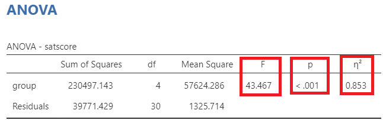

2 ANOVA Designs (1)
When we have finished this Lab, we should be able to:
2.1 One-way between-subjects Analysis of Variance (One-way ANOVA)
The one-way between-subjects analysis of variance (one-way ANOVA) is used to compare more than two independent (unrelated or unpaired) samples. We may think of it as an extension of Student’s t-test.
Although, ANOVA can detect whether there are mean differences between groups, it does not identify which groups are different from the others. At first, we might consider to compare all groups in pairs with t-tests. However, this approach can lead to incorrect conclusions due to the multiple comparisons problem. Each additional t-test increases the likelihood of making at least one Type I error (false positive) across the set (often called a family) of comparisons.
This is why, after an ANOVA test concludes that at least one difference exists between groups (omnibus analysis), we should perform statistical tests that account for the number of comparisons (post hoc tests). Some of the most commonly used post hoc tests include the Tukey test, Bonferroni correction, and Holm test.
2.1.1 Importing data
The SAT is used by a wide range of colleges and universities as part of the application process for college admission. Assume we are interested in the effect of preparation time on SAT performance.
In this example, we have five student groups, each containing seven cases. The groups contain students who have studied for either zero, two, four, six, or eight months prior to taking the SAT.
Open the dataset named “sat” from the file tab in the menu (Figure 2.2).
We prepare the data as follows (Figure 2.3):
2.1.2 Research question
A quaziexperimental study explored the effect of preparation time on SAT performance, with students having studied for different duration (zero, two, four, six, or eight months). The question of interest is whether the mean SAT score differs across these preparation times.
2.1.3 Hypothesis testing for the one-way ANOVA test
2.1.4 Assumptions
The dependent variable,
satscore, should be approximately normally distributed for all groups. To increase the number of observations used in assessing normality, we often examine the residuals from the ANOVA model for the entire dataset using a normal quantile plot of the standardized residuals (Normal Q-Q plot).The data in groups have similar variance (also named as homogeneity of variance or homoscedasticity).
2.1.5 Descriptive statistics and plots
On the Jamovi top menu navigate to
flowchart LR A(Exploration) -.-> B(Descriptives)
as shown below in Figure 2.4.
Highlight satscore in the left panel and click it (or drug it) over the the Variables. Then highlight the group and click it over the Split by (Figure 2.5). Additionally, select variables across rows.
The default descriptive statistics are shown in Figure 2.6: the mean, median, standard deviation, minimum and maximum.
To generate boxplots, click the Plots, and check Box plot, Data, and Mean.
The plot suggests that the mean SAT score (black square) increases as the months progress, suggesting a positive association between time and SAT score improvement.
2.1.6 ANOVA (omnibus analysis)
On the Jamovi top menu navigate to
flowchart LR A(Analyses) -.-> B(ANOVA) -.-> C(ANOVA)
as shown below in Figure 4.4.
NOTE: There is also a One-Way ANOVA menu option. This version of the ANOVA analysis does not have all the options we want so we are not going to use this method, so we will run our analysis via “ANOVA” rather than “One-Way ANOVA”.
In the ANOVA dialog box, highlight satscore in the left panel and click it (or drug it) over the the Dependent Variable. Then highlight the group and click it over the Fixed Factors (Figure 2.10). Additionally, check \(\eta^2\).
Assumptions Checks
Click the Assumptions Checks, and check Homogeneity test, Normality test, and Q-Q plot (Figure 4.9).

- Normality of distributions
Remember: Hypothesis testing for Shapiro-Wilk test for normality
\(H_{0}\): the data came from a normally distributed population.
\(H_{1}\): the data tested are not normally distributed.
- If p − value < 0.05, reject the null hypothesis, \(H_{0}\).
- If p − value ≥ 0.05, do not reject the null hypothesis, \(H_{0}\).
The Shapiro-Wilk test of normality suggests normal distributions (p=0.56 > 0.05; \(H_o\) is not rejected).
The data points mostly fall along the diagonal line, indicating that the residuals are approximately normally distributed. Additionally, there are no extreme deviations or systematic patterns, suggesting that normality holds well.
- Equality of variances
Remember: Hypothesis testing for Levene’s test for equality of variances
\(H_{0}\): the variances of WeightLoss in all groups are equal (\(σ^2_1=σ^2_2=σ^2_3=σ^2_4=σ^2_5\))
\(H_{1}\): the variances of satscore differ between groups (\(σ^2_i\neq σ^2_j\), where \(i,j= 1, 2, 3, 4, 5\) and \(i\neq j\))
- If p − value < 0.05, reject the null hypothesis, \(H_{0}\).
- If p − value ≥ 0.05, do not reject the null hypothesis, \(H_{0}\).
Since p = 0.239 > 0.05, the \(H_0\) of the Levene’s test is not rejected and the variances of the five conditions are comparable; in short, it appears that the assumption of homogeneity of variance is not violated.
ANOVA table

In Figure 2.15, the F-statistic is calculated as follows:
\[F= \frac{Mean \ Square \ between \ groups}{Mean \ Square \ within \ groups} = \frac{Mean \ Square \ group}{Mean \ Square \ residuals} = \frac{57624.3}{1325.7} = 43.467\]
Note that we compare this value to an F-distribution (F-test). The degrees of freedom in the numerator (df1) and the denominator (df2) are 4 and 30, respectively.
The p-value < 0.001 (reject \(H_0\) of the ANOVA test). There is at least one condition with mean SAT score which is different from the other means.
This table also presents the eta squared (\(\eta^2 = 0.85\)) , which expresses the proportion of variability explained by the group relative to the total variability:
\[\eta^2 = \frac{Sum \ of \ squares \ group}{Total \ sum \ of \ squares} = \frac{230497}{230497 + 39771} = \frac{230497}{270268}=0.85\]
A value of 0.85 (85%) means that 85% of the variation in SAT scores can be attributed to the preparation time and would be considered a large effect size. (NOTE: Whether the \(\eta^2\) value is considered “high” or not is relative and depends on the research context).
2.1.7 Post hoc tests
Click the Post Hoc Tests, then highlight the group in the left panel and click it (or drug it) over the the right panel. Check Tukey correction.
For example, the mean difference between zero months and two months is: 412.857 - 474.286 = -61.429, which is significant (p=0.028).
Interpretation
An analysis of variance showed that the amount of preparation for the SAT in which students engaged appeared to significantly affect their performances on the test, F(4, 30) = 43.47, p < 0.001, \(\eta^2 = 0.85\). Post-hoc analyses with Tukey’s test, adjusting p-values for multiple comparisons, indicated that each additional two months of study up to six months was associated with significantly higher SAT scores. However, there was no significant difference in scores between the six month and eight month study groups.